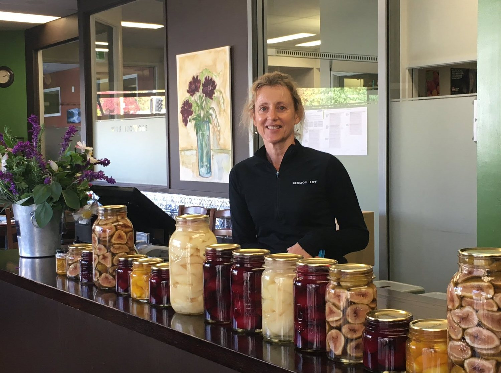
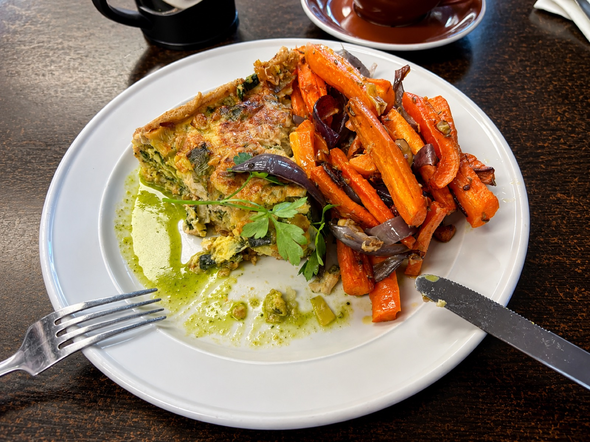
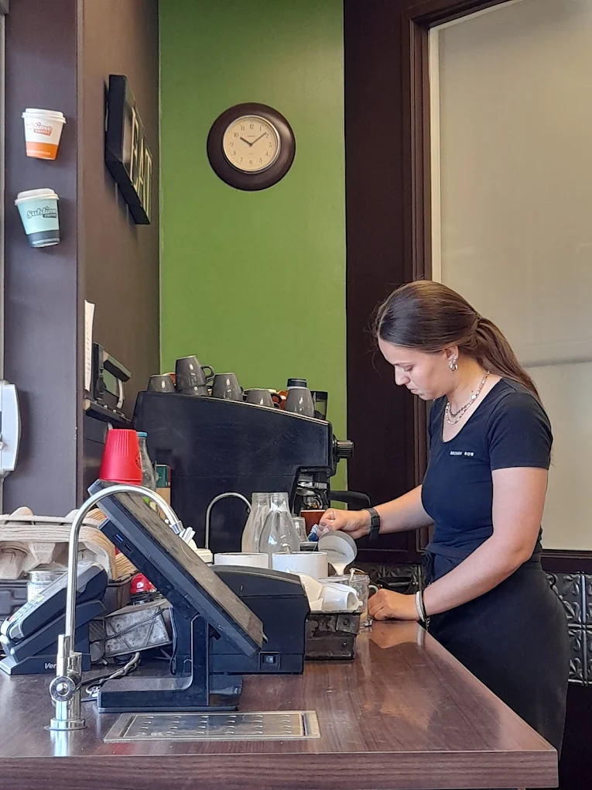
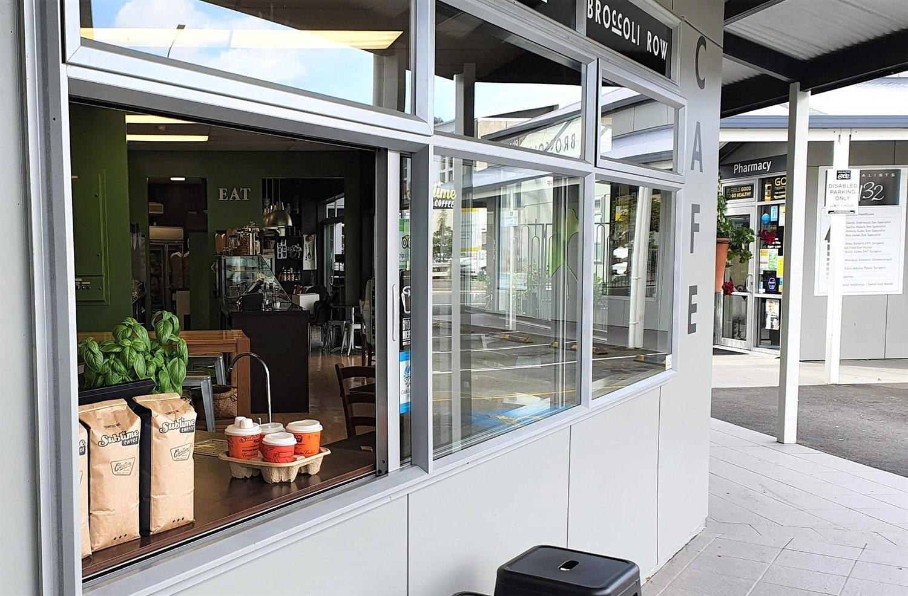
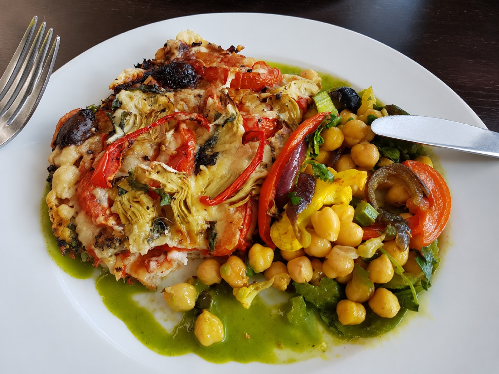
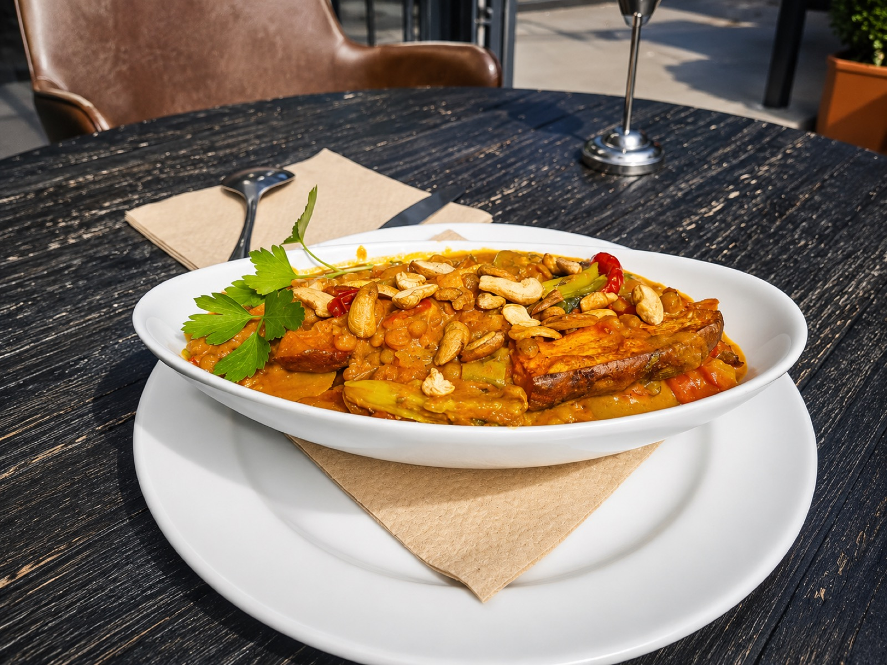

Local produce at its peak, honest cooking, and a table worth staying at. Brunch through dinner, seven days, just off the top of Trafalgar Street.
An easy stroll from Trafalgar Street and the Saturday market in central Nelson.
Menu built around Nelson & Tasman growers — it changes as the season does.
Rated 4.7 out of 5 across 95 Google reviews — regulars for a reason.


Broccoli Row started with a simple idea: cook the good stuff that grows around Nelson and Tasman, and make a room people actually want to sit in. No fuss, no gimmicks — just a seasonal menu that changes with what the growers bring in.
Whether you're in for a quick flat white, a long weekend brunch, or dinner with a table of mates, you'll get honest food, warm service, and a spot that feels like it's yours.
A taste of what lands in front of you — plates, produce and the room, all shot in-house.




A small crew who cook, pour and look after the room like it's their own.
The face out front — books your table, remembers your order, and keeps the room humming.
Writes the seasonal menu around whatever the growers drop off that week.
Prep, baking and the plates — the ones making sure every dish leaves right.
Coffee, service and a friendly welcome, whether you're a regular or a first-timer.
"I was recommended by friends living in Nelson that Broccoli Row is the best cafe in Nelson. And they weren't wrong. The meal I had at lunch time during a week day was so delicious and homely. The atmosphere is lively and full of diners. The staff were welcoming and very helpful."
"This is a joyous, friendly, delicious and healthy restaurant. Prices are reasonable and the meals are served promptly. Plant-based and seafood. I've been in Nelson for 2 weeks and this is my favourite place!"
"Broccoli Row has the most delicious food. Their feta and spinach tart with their secret green sauce is amazing. Cakes are always delicious, fresh and moist. Great barista hot chocolate too."
"Nice cafe tucked into the medical precinct on Collingwood Street. The coffee and baking are very good, lots of tasty treats and vegetarian savouries."
"The vegan curry was delicious! Coffee was good too. I was able to sit outside in the sun. I totally recommend."
"So tasty we visited twice in a row! Travelling through, we found the perfect veggie spot for lunch. We enjoyed it so much we thought we'd pop back."
A quick review helps other Nelson locals find us — and tells us we're getting it right. It only takes a moment.
Leave us a reviewWalk in, or call ahead for larger tables and weekend brunch. We'd love to have you.
Kitchen and coffee, seven days. Times below are a guide — call ahead over public holidays.